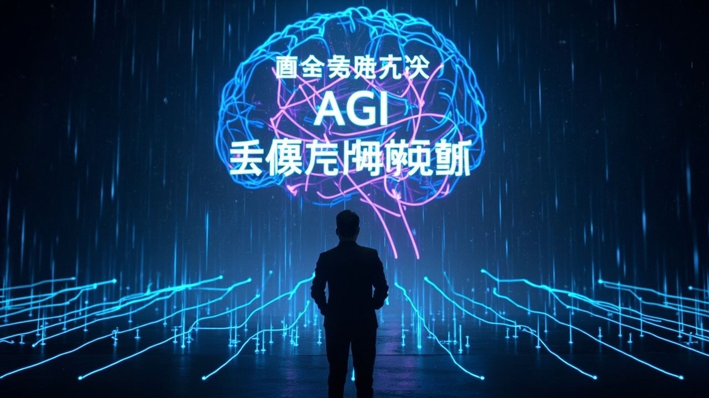

DeepSeek 創辦人內部會議實錄：AGI、開源、剋制與終局思維

DeepSeek 創辦人梁文鋒的內部講話被全網封殺，展現中國 AI 創辦人最坦誠的戰略思考：剋制、開源、只盯 AGI 主線，用美國二十分之一的算力做出世界級成果。
DeepSeek 的出發點不是賺錢上市，而是「對人類有用、對世界懷著善意」。梁文鋒直言：「剋制不是情懷，是戰略。」十個月收回設備成本的定價，只賺合理利潤，是剋制的具體體現。
AI 最終可能佔 GDP 10%，這麼大的事情沒有人能獨佔。梁文鋒認為：「越想獨佔越做不成。」開源是讓利，定價低也是讓利，對外讓社會高興，對內讓員工有成就感。
DeepSeek 的 AGI 路線圖分為多個階梯：當前（超越人類）→ Agent（智能上限更高）→ 持續學習（關鍵突破）→ 奇點（模型自己開發自己）→ 具身智能（走進現實）。選擇這個順序是因為「這條路最輕鬆」。
美國最大模型激活約 800B 參數，國內還在幾十 B 規模，落後一個數量級。但 DeepSeek 用美國二十分之一的算力把事情做出來了，目標是把時間差縮到六個月、三個月。
「剋制不是情懷，是戰略。捨棄一些東西可以換來更多其他的東西。」
— 梁文鋒，DeepSeek 創辦人這份被全網封殺的內部講話，展現了梁文鋒對中國 AI 發展的極致戰略清醒。他算的不是一兩年的賬，而是十年二十年的賬；爭的不是一城一池，而是誰能走到 AGI 終點的概率。在所有公司都在搶應用、搶商業化、搶入口的行業氛圍下，選擇慢、選擇剋制、只盯著 AGI 主線的 DeepSeek，能否真的跑到終點，值得持續關注。
| 維度 | DeepSeek（中國） | OpenAI（美國） |
|---|---|---|
| 最大模型規模 | 幾十 B 參數 | 800B 參數 |
| 算力使用效率 | 美國 1/20 算力 | 完整算力 |
| 商業策略 | 剋制、合理利潤 | 追求市場份額 |
| 開源策略 | 完全開源 | 部分開源 |
| 與美國時間差 | 落後 1-2 年 | 領先 |
CUDA 護城河正在瓦解：AI 幫助構建生態、TileLang 可快速重寫生態、專用芯片不再綁定 CUDA。華為 950 性能可平替 GB200，代價是四張華為卡頂一張英偉達卡。
只要團隊不散繼續做下去，就一定能做成 AGI。錢和資源都不是問題。DeepSeek 人才流動率一直比同行低，因為很多人「不是全奔著錢來的，是希望在能做成 AGI 的環境裡做事」。